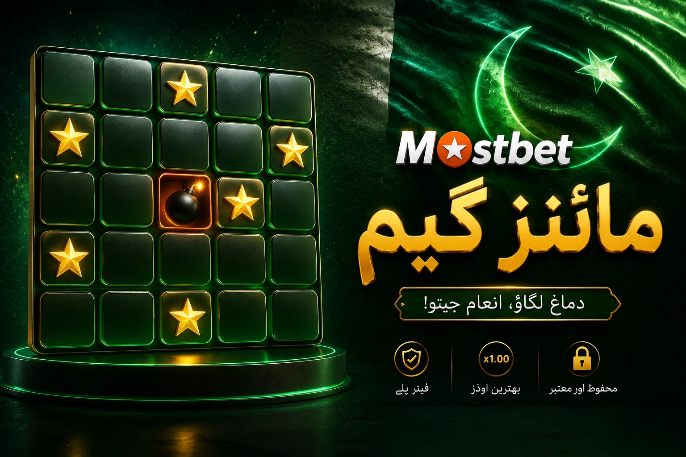

Tile grid
The round runs on a grid where some tiles hide a safe value and others hide a mine that closes the round on the spot.
A hands-on guide to Mostbet Mines focused on how the tile grid unfolds pick by pick, the role of the chosen mine count and the moment when locking in the prize beats turning over another tile.

Mines is different from single-decision crash titles because each tile turn is its own micro-choice. Fixing the framework before the first click keeps those mid-round decisions cleaner and calmer.
The blocks below regroup the moving parts of a Mines round without copying the structure used for Aviator or Lucky Jet on other inner pages.
The round runs on a grid where some tiles hide a safe value and others hide a mine that closes the round on the spot.
The player chooses how many mines sit on the grid before the round starts, which shifts the risk profile of every single pick.
Each safe pick lifts the multiplier, yet at the same time raises the share of remaining tiles that could be hiding a mine.
View moreCashing out at the right moment closes the round with the current multiplier instead of putting the line at risk on the next tile.
View moreA compact summary flagging the choices worth fixing in advance so the mid-round decisions are not made on impulse.
| Element | What to set before the round | Why it matters for PK players |
|---|---|---|
| Mine count | The number of mines hidden on the tile grid | A higher count lifts the multiplier per safe tile but also raises the chance the round ends early. |
| Stake | The amount placed on the round, fixed at the moment the grid loads | Defines the upper boundary of what can be lost on a single grid run. |
| Exit rule | The number of safe picks at which the prize is locked in | Replaces a heat-of-the-moment decision with a clear stopping point set in advance. |
This page treats Mostbet Mines as a concrete reader topic rather than a brand label. The idea is for a PK reader to pull apart the questions of grid setup, mine count, tile-by-tile decisions and exit timing so each one can be reviewed on its own.
The paragraphs keep a working voice: which figure to fix first, which choice tends to drift in the middle of a round and where it pays off to lock the prize before turning over another tile.
AviatorPhrases such as tile grid, mine count, safe pick, multiplier step and exit point come up in many PK searches around Mines. They are unpacked on this page in working language so a new reader can map each one to a concrete on-screen element rather than to a vague feeling.
The arrangement of blocks on this page is built differently from Aviator and Lucky Jet. Every inner page on the domain keeps its own focus rather than reusing the same outline or the same set of paragraphs across crash titles.
App
Pick the route that matches your current question: slot library, live tables, sports markets, Aviator, Lucky Jet or the ongoing campaigns.
The higher the mine count, the larger the multiplier added with each safe tile, yet also the lower the chance that the next click stays safe. The choice is a direct trade-off between potential return and round length.
No. The position of mines is generated freshly for each round, so a previous safe spot holds no special status in the next round. Strategies built on tile geometry tend to leak balance over time.
No. Each remaining tile is either a mine or a safe value, with the share set by the initial mine count. A long safe streak does not lower the chance that the very next click ends the round.
The contribution depends on the rules of the active campaign. Many promos place Mines in the same bracket as other crash-style titles, which often means a reduced contribution percent or full exclusion.